|
|
|
|
Арсен Шомахов и группа «Регтайм»
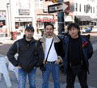
Получить американские визы нам представлялось делом практически безнадежным, тем более что времени на это было в обрез - мы очень долго ждали факс с официальным приглашением на конкурс от Уэсли, а когда, наконец, получили его, до даты отъезда оставалось 3 недели. Но все же мы взялись за дело, чтобы позднее не было мучительно больно за неиспользованный шанс. Мы заполнили необходимые формы, собрали документы, подтверждающие отсутствие иммиграционных намерений, собрали публикации и прочие материалы о группе, деньги на консульский сбор и курьерские услуги и направили все в Москву. Мой брат подал все документы в Pony Express (эта контора принимает заявления на неиммиграционные визы и направляет в Посольство США), и в тот же день сообщил мне дату и время собеседования. Без особой надежды на успех мы выехали в Москву и:, к нашему великому удивлению паспорта с визами были готовы уже на следующий день!
Следующая проблема состояла в том, чтобы за 2 недели найти деньги на покупку авиабилетов, оплату гостиницы, проживание, проезд в Москву и обратно. Мы использовали все возможные и невозможные приемы, и в результате, благодаря поддержке сайта blues.ru, министерства культуры Кабардино-Балкарии, коммерческих банков "Бум.Банк", "Сбербанк", универмага "Нальчик", Фонда культуры Кабардино-Балкарии, кафе "Амиго", где мы регулярно выступаем, друзей и родственников, необходимая сумма была собрана. Билеты Москва-Нью-Йорк-Цинциннатти-Мемфис и обратно были приобретены незамедлительно. По интернету мы отыскали недорогой мотель недалеко от центра города и забронировали номер с 1-го по 7-е февраля.
Мы отправились в Москву на автобусе, прельстившись недорогими билетами и относительно небольшим (24 часа, поезд - 36 часов) временем в пути. Все самолеты на Москву в тот момент из-за плохой погоды приземлялись в Нижнем Новгороде. Мы собрали вещи, инструменты, пирожки в дорогу и отправились в Москву. По плану у нас был день в запасе до вылета, чтобы отдохнуть после автобусной тряски, пыли и водки.
Мы и предположить не могли, с какими сложностями нам придется столкнуться! За полночь мы проехали Ростов и, через 50 км, уперлись в пробку, которая как выяснилось позже, растянулась на 20км и перекрыла дорогу на неделю. Уговорив водителя вернуться в Ростов, мы избежали участи быть заблокированными в постоянно прирастающей череде замерзших машин. Добравшись до окраины города, мы стали судорожно соображать, что же делать дальше. Около 4 ночи мы остановили проезжавшее мимо автобуса такси, очевидно ниспосланное свыше, и направились на ЖД вокзал. Мы взяли билеты на поезд Нальчик - Москва, который по счастью уже стоял на станции, и должен был прибыть в Москву утром в день вылета. Несмотря на 2-х часовое опоздание поезда, в аэропорт мы попали вовремя.
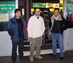
В комфортабельном и просторном Боинге 767 нашлось достаточно места для 2 гитар и набора тарелок. Весь перелет с двумя пересадками длился 17 часов. Наконец, около 10 вечера, мы прилетели в Мемфис.
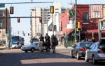
(В течение нашего пребывания в мотеле, полиция появлялась раза 3, однажды на наших глазах в наручниках увезли огромного чернокожего детину)
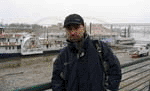 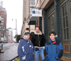
84 группы и около 40 дуэтов и солистов из 8 стран и 32 американских штатов должны были принять участие в конкурсе. Это самое большое число за всю историю конкурса, о чем с гордостью говорили его устроители. 84 блюзовые группы были разбиты на подгруппы по 8 - 9 в каждой и распределены между 10-ю клубами, располагающимися на знаменитой Beale street.. Каждой группе давалась возможность выступить дважды - 3-го и 4-го февраля. Время выступления ограничивалось 30-ю минутами. Оба дня выступления оценивали разные судьи, по 3-е судей на один клуб. Выступления оценивались по следующим критериям: блюзовое содержание, оригинальность, талант, сыгранность, сценическое мастерство. За каждые лишние 10 секунд накладывались штрафные очки. По результатам 2 выступлений из каждого клуба в финал могла выйти только одна группа.
Нам и всем остальным конкурсантам в этот день было необходимо зарегистрироваться в Union Café в здании гостиницы Holiday Inn и получить расписание выступлений конкурсантов. Зарегистрировавшись, мы получили брошюрку конкурса, где было указано, что выступаем первыми в клубе Blues City Cafe в 18ч30 и шестыми на следующий день в 21ч50 мин. Кроме того, нам выдали цветные бумажные браслеты, которые являлись пропуском в любой клуб на Beale street на 3 и 4 февраля.
Получив расписание, мы решили сходить на разведку в Blues City Cafe, посмотреть оборудование, помещение и пообедать. После мы направились на очередную сходку (Bands orientation), где конкурс был официально открыт, и можно было задать вопросы устроителям. Там мы встретились с группой Blues mobile band из Грузии, которые уже во второй раз приехали на этот конкурс.
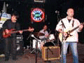
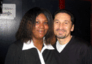
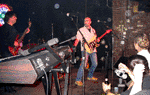
Незадолго до окончания конкурсной программы ко мне подошел звукореж и предложил поиграть по окончании конкурсной программы в клубе еще пару часов, до 2 часов ночи. Я обсудил это предложение с Асланом и Беком и решил отказаться, т.к. в этот вечер должны были объявить финалистов в Cadre Building, где уже шел джем конкурсантов.
Переместившись в Cadre Building, мы пополнили толпу нетерпеливо ожидавших результатов музыкантов, часть из которых жевала чипсы и потребляла пиво, другая стояла в очереди для записи на джем, с участием Дебры Колман (кстати, я так ее и не увидел на этом джеме, возможно, она выступала в самом начале). Все это длилось целую вечность и, наконец, уже после 2 часов ночи были объявлены финалисты. С замиранием сердца я вслушивался в слова объявлявшего, однако к моему разочарованию, названия нашей группы не прозвучало. Чтобы понять, кто же все-таки вышел в финал из нашей подгруппы, я подошел к Биг Рику, который на мой вопрос ответил просто: "The lady that looks like a dude:", имея в виду вокалистку группы Patrick McLauglin band. В голове почему-то сразу зазвучало: "Dude looks like a lady, dude looks like a lady:" На самом же деле, в финал вышел Kory Montgomery, молодой гитарист, о котором я писал выше.
Мы взяли такси и поехали в мотель, я завел беседу со старым чернокожим таксистом, который, растягивая на южный манер, говорил: "I used to like the blues when I was young:". и т.д., заболтавшись, он завез нас в другой район и, стал извиняться, рассказывая очередную байку об одном русском парне, которого он знал в далекой молодости и называл не иначе как "Russian Bear". Это был самый замечательный таксист за все время нашего пребывания в Мемфисе.
Мы пришли посмотреть и послушать финал в Daisy Theater за 40 минут до начала. По-видимому, это известный зал, при входе анонсировались мартовские концерты Govt Mule и Steve Vai. К тому времени к входу уже выстроилась очередь. Людей стали запускать минут за 15 до начала, и очередь успела растянуться метров на сто. Нам, бывшим конкурсантам, никаких поблажек при входе не было. Выложив по 16 баксов за билет мы вошли. Небольшой зал с балконом и жесткими раскладными стульчиками обладал очень важной деталью - огромным баром, у которого все время толпился народ.
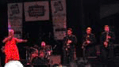
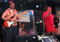
В одном супермаркете к нам подошли бывшие конкурсанты и поинтересовались, кто-же взял призы. Я объяснил, что мы не досидели до объявления результатов, хотя ушли за полночь. Оказалось, что они сидели еще дольше, но даже в 2 ночи результаты не объявили.
А места распределились следующим образом:
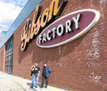
2 место - Diunna Greenleaf and the Blue Mercy Band, группа понравившаяся мне больше всех. Гитарист, как мне кажется, совершенно по-праву, получил приз им. Альберта Кинга - гитару Gibson flying V. Приз - 750 USD.
3 место - Lady Sunshine and the X Band из Детройта, о которых я уже писал. Приз - 500 USD.
Финалистов выбрало жюри в лице представителей блюзовой индустрии, не имеющих отношения к Blues Foundation, для пущей беспристрастности. Из знакомых мне имен прозвучал Пол Ошер.
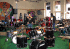 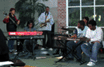
В тот же день мы попали в деловую часть города, которая показалась декорацией к съемкам сюрреалистического фильма - ни души на улицах и только пустой трамвай снующий туда - сюда:. очень странное впечатление. (Кстати, трамвай по-американски почему-то называется trolley).
В аэропоту Мемфиса сотрудники отвечающие за безопасность не позволили нам взять с собой на борт ключ от малого барабана и ручку гитарного тремоло с шестигранником на конце:Пришлось возвращаться, просить в багажном отделении найти сумку, положить эти мелочи в багаж, перерегистрировать его, вновь пройти секьюрити чек и т.д. К счастью больше проблем не возникло и через15 часов перелета (путь назад чуть короче) из теплого расслабленного Мемфиса мы попали в занесенную снегом суматошную Москву. В тот же вечер мы отыграли концерт в Доме у Дороги, где радостно встретились с друзьями, вручили Федору сертификат Филиала Блюзового Фонда и, наконец, в усмерть напились. На следующий день Аслан с Беком едва успели на автобус в Нальчик, а я задержался еще на пару дней, чтобы поучаствовать в гитарном фестивале в ЦДХ.
Трудно поверить, но поездка состоялась. Она придала нам уверенности в себе, своих силах, и в своей музыке. Мы получили огромный энергетический заряд. Хотя бы ради этого стоило съездить, не говоря уже о возможности посмотреть блюзово-рок-н-ролльный город, увидеть Миссиссиппи, снять шляпу перед статуей Хэнди, заглянуть в Sun Studio, послушать музыку и пообщаться с американцами.
Я искренне благодарен всем и каждому в отдельности, кто помог этой поездке осуществиться!
Wazzzzuuuuppppp!!!
Арсен Шомахов,
17 февраля 2005, Нальчик
{kind=link}
{kind=link}
{kind=link}
{kind=link}
{kind=link}
{kind=link}
{kind=link}
{kind=link}
{kind=link}
{kind=link}
{kind=link}
{kind=link}
{kind=link}